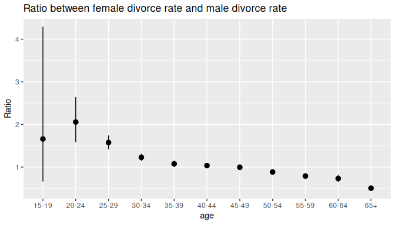

1 Introduction
The rvec package provides tools for working with random draws. The draws are held in a structure called an rvec. An rvec can, for many purposes, be treated like an ordinary R vector, and manipulated using standard functions from base R and the tidyverse. rvec also provides tools for summarising across draws to, for instance, produce point estimates or credible intervals.
2 Examples
We start with some examples. Along with the rvec package, we will need some tidyverse packages,
When rvec is loaded, R emits messages about functions such as sd() and var()
being “masked”. However, these functions retain their usual behavior for ordinary
vectors, while gaining new behavior for rvecs. No action is needed.
We create an rvec called theta containing three draws,
The header <rvec_dbl<3>[1]> describes the structure of theta:
-
_dblindicates thatthetais composed of doubles -
<3>indicates thatthetaholds three random draws, and -
[1]indicates that each draw has length 1.
We can perform standard mathematical operations on theta,
theta^2 + 1
#> <rvec_dbl<3>[1]>
#> [1] 10,2,1theta recycles to match the length of other vectors,
beta <- theta + c(1, -1)
beta
#> <rvec_dbl<3>[2]>
#> [1] 4,2,1 2,0,-1The new rvec beta consists of three draws of a vector of length 2:
- the first vector,
c(4, 2), is obtained by adding3toc(1, -1), - the second vector,
c(2, 0), is obtained by adding1toc(1, -1), and - the third vector,
c(1, -1), is obtained by adding0toc(1, -1).
To summarize across random draws, we use draws_* functions, e.g.,
draws_mean(beta)
#> [1] 2.3333333 0.3333333or
draws_sd(beta)
#> [1] 1.527525 1.527525Our next example is based on draws from the posterior distribution from a Bayesian analysis of divorce in New Zealand. The posterior distribution refers to divorces per thousand people per year, disaggregated by age and sex. In their original form, the draws are not stored as an rvec, but instead in a one-draw-per-row format,
divorce
#> # A tibble: 22,000 × 4
#> age sex draw rate
#> <fct> <chr> <int> <dbl>
#> 1 15-19 Female 1 0.0462
#> 2 15-19 Female 2 0.0369
#> 3 15-19 Female 3 0.0448
#> 4 15-19 Female 4 0.0411
#> 5 15-19 Female 5 0.0333
#> 6 15-19 Female 6 0.0511
#> 7 15-19 Female 7 0.0249
#> 8 15-19 Female 8 0.0280
#> 9 15-19 Female 9 0.0339
#> 10 15-19 Female 10 0.0425
#> # ℹ 21,990 more rowsWe use function collapse_to_rvec() to convert from the one-draw-per-row format to an rvec,
divorce_rvec <- divorce |>
collapse_to_rvec(values = rate)
divorce_rvec
#> # A tibble: 22 × 3
#> age sex rate
#> <fct> <chr> <rdbl<1000>>
#> 1 15-19 Female 0.036 (0.019, 0.068)
#> 2 20-24 Female 0.67 (0.58, 0.78)
#> 3 25-29 Female 3.2 (3, 3.4)
#> 4 30-34 Female 5.8 (5.5, 6.1)
#> 5 35-39 Female 6.5 (6.2, 6.9)
#> 6 40-44 Female 7.1 (6.8, 7.4)
#> 7 45-49 Female 7.2 (6.9, 7.6)
#> 8 50-54 Female 6 (5.8, 6.3)
#> 9 55-59 Female 4.4 (4.2, 4.7)
#> 10 60-64 Female 2.7 (2.5, 3)
#> # ℹ 12 more rowscollapse_to_rvec() ensures that, internally, draw 1 for females aged 15-19 lines up with draw 1 for females aged 20-24, which lines up with draw 1 for females aged 25-29, and so on.
In this example, the rvec has many draws, so, rather than showing each draw, the print method shows the median value followed by the 2.5% and 97.5% quantiles.
We calculate the ratio between female and male divorce rates,
divorce_ratio <- divorce_rvec |>
pivot_wider(names_from = sex, values_from = rate) |>
mutate(ratio = Female / Male)
divorce_ratio
#> # A tibble: 11 × 4
#> age Female Male ratio
#> <fct> <rdbl<1000>> <rdbl<1000>> <rdbl<1000>>
#> 1 15-19 0.036 (0.019, 0.068) 0.022 (0.012, 0.041) 1.7 (0.66, 4.3)
#> 2 20-24 0.67 (0.58, 0.78) 0.33 (0.27, 0.4) 2.1 (1.6, 2.6)
#> 3 25-29 3.2 (3, 3.4) 2 (1.9, 2.2) 1.6 (1.4, 1.7)
#> 4 30-34 5.8 (5.5, 6.1) 4.7 (4.5, 5) 1.2 (1.1, 1.3)
#> 5 35-39 6.5 (6.2, 6.9) 6.1 (5.8, 6.4) 1.1 (1, 1.2)
#> 6 40-44 7.1 (6.8, 7.4) 6.9 (6.6, 7.2) 1 (0.98, 1.1)
#> 7 45-49 7.2 (6.9, 7.6) 7.3 (6.9, 7.6) 1 (0.93, 1.1)
#> 8 50-54 6 (5.8, 6.3) 6.8 (6.5, 7.1) 0.89 (0.83, 0.94)
#> 9 55-59 4.4 (4.2, 4.7) 5.6 (5.3, 5.9) 0.79 (0.74, 0.85)
#> 10 60-64 2.7 (2.5, 3) 3.7 (3.5, 4) 0.73 (0.65, 0.82)
#> 11 65+ 0.84 (0.76, 0.93) 1.7 (1.5, 1.8) 0.51 (0.45, 0.57)Note that although rate, Female, and Male in these calculations are all rvecs, the code is identical to the code that would be needed for an ordinary R vector.
To obtain point estimates and uncertainty measures for rvecs, we use the draw functions. draws_ci(), for instance, returns medians and 95% credible intervals.
divorce_ratio <- divorce_ratio |>
mutate(draws_ci(ratio))
divorce_ratio
#> # A tibble: 11 × 7
#> age Female Male ratio ratio.lower
#> <fct> <rdbl<1000>> <rdbl<1000>> <rdbl<1000>> <dbl>
#> 1 15-19 0.036 (0.019, 0.068) 0.022 (0.012, 0.041) 1.7 (0.66, 4.3) 0.662
#> 2 20-24 0.67 (0.58, 0.78) 0.33 (0.27, 0.4) 2.1 (1.6, 2.6) 1.59
#> 3 25-29 3.2 (3, 3.4) 2 (1.9, 2.2) 1.6 (1.4, 1.7) 1.42
#> 4 30-34 5.8 (5.5, 6.1) 4.7 (4.5, 5) 1.2 (1.1, 1.3) 1.15
#> 5 35-39 6.5 (6.2, 6.9) 6.1 (5.8, 6.4) 1.1 (1, 1.2) 1.00
#> 6 40-44 7.1 (6.8, 7.4) 6.9 (6.6, 7.2) 1 (0.98, 1.1) 0.982
#> 7 45-49 7.2 (6.9, 7.6) 7.3 (6.9, 7.6) 1 (0.93, 1.1) 0.934
#> 8 50-54 6 (5.8, 6.3) 6.8 (6.5, 7.1) 0.89 (0.83, 0.94) 0.831
#> 9 55-59 4.4 (4.2, 4.7) 5.6 (5.3, 5.9) 0.79 (0.74, 0.85) 0.735
#> 10 60-64 2.7 (2.5, 3) 3.7 (3.5, 4) 0.73 (0.65, 0.82) 0.651
#> 11 65+ 0.84 (0.76, 0.93) 1.7 (1.5, 1.8) 0.51 (0.45, 0.57) 0.447
#> # ℹ 2 more variables: ratio.mid <dbl>, ratio.upper <dbl>Next we graph the results,
ggplot(divorce_ratio,
aes(x = age,
ymin = ratio.lower,
y = ratio.mid,
ymax = ratio.upper)) +
geom_pointrange() +
ylab("Ratio") +
ggtitle("Ratio between female divorce rate and male divorce rate")
3 Structure of an rvec
The class "rvec" has four subclasses:
-
"rvec_dbl", which holds doubles, e.g.3.142,-1.01; -
"rvec_int", which holds integers, e.g.42,-1; -
"rvec_lgl", which holdsTRUE,FALSE, andNA; and -
"rvec_chr", which holds characters, e.g."a","Thomas Bayes".
Internally, an rvec is a matrix, with each row representing one unknown quantity, and each column representing one draw from the joint distribution of the unknown quantities,
| Draw 1 | Draw 2 | \(\dots\) | Draw \(n\) | |
|---|---|---|---|---|
| Quantity 1 | \(\theta_{11}\) | \(\theta_{12}\) | \(\dots\) | \(\theta_{1n}\) |
| Quantity 2 | \(\theta_{21}\) | \(\theta_{22}\) | \(\dots\) | \(\theta_{2n}\) |
| \(\vdots\) | \(\vdots\) | \(\vdots\) | \(\ddots\) | \(\vdots\) |
| Quantity \(m\) | \(\theta_{m1}\) | \(\theta_{m2}\) | \(\dots\) | \(\theta_{mn}\) |
Ordinary functions are applied independently to each column. For instance, calling sum() on an rvec creates a new rvec with structure
Table : The result of summing along the vector
| Draw 1 | Draw 2 | \(\dots\) | Draw \(n\) | |
|---|---|---|---|---|
| Quantity 1 | \(\sum_{i=1}^m\theta_{i1}\) | \(\sum_{i=1}^m\theta_{i2}\) | \(\dots\) | \(\sum_{i=1}^m\theta_{in}\) |
Functions with a draws_ prefix are applied independently to each row. For instance, calling draws_mean() on an rvec creates a new numeric vector with structure
| Value | |
|---|---|
| Quantity 1 | \(\frac{1}{n}\sum_{j=1}^n\theta_{1j}\) |
| Quantity 2 | \(\frac{1}{n}\sum_{j=1}^n\theta_{2j}\) |
| \(\vdots\) | \(\vdots\) |
| Quantity \(m\) | \(\frac{1}{n}\sum_{j=1}^n\theta_{mj}\) |
Each rvec holds a fixed number of draws. Two rvecs can only be used together in a function if
- both rvecs contain the same number of draws, or
- one of the rvecs contains a single draw.
4 Creating rvecs
An individual rvec can be created from a list of vectors,
a matrix,
x <- matrix(rnorm(2000), nrow = 2)
rvec(x)
#> <rvec_dbl<1000>[2]>
#> [1] -0.026 (-1.9, 1.9) -0.031 (-1.9, 2)or an atomic vector
Function rvec() chooses from classes "rvec_dbl", "rvec_int", "rvec_lgl", and "rvec_chr", based on the input. To enforce a particular choice of class, use function rvec_dbl(), rvec_int(), rvec_lgl(), or rvec_chr(),
x <- list(1:3)
rvec(x)
#> <rvec_int<3>[1]>
#> [1] 1,2,3
rvec_dbl(x)
#> <rvec_dbl<3>[1]>
#> [1] 1,2,3
rvec_chr(x)
#> <rvec_chr<3>[1]>
#> [1] "1","2","3"When the raw data take the form of a data frame with one draw per row, the most efficient way to create rvecs is to use collapse_to_rvec(). See Section 2 for an example.
Section 6 shows how to create an rvec consisting of draws from a standard probability distribution.
5 Mathematical and logical operations
Mathematical and logical operations are applied independently to each draw.
x <- rvec(list(c(TRUE, FALSE),
c(TRUE, TRUE)))
x
#> <rvec_lgl<2>[2]>
#> [1] T,F T,T
all(x)
#> <rvec_lgl<2>[1]>
#> [1] T,F
any(x)
#> <rvec_lgl<2>[1]>
#> [1] T,TUser-defined functions that consist entirely of standard mathematical and logical operations should work with no modifications.
logit <- function(p) log(p / (1-p))
tibble(
x = rvec(list(c(0.2, 0.4),
c(0.6, 0.9))),
y = logit(x)
)
#> # A tibble: 2 × 2
#> x y
#> <rdbl<2>> <rdbl<2>>
#> 1 0.2,0.4 -1.386,-0.4055
#> 2 0.6,0.9 0.4055,2.197Multiplying an rvec by a matrix produces an rvec (though only with R version 4.3.0 and higher)
if (getRversion() >= "4.3.0") {
m <- rbind(c(1, 1),
c(0, 1))
x <- rvec(list(1:2,
3:4))
m %*% x
}
#> <rvec_dbl<2>[2]>
#> [1] 4,6 3,4rvec contains a suite of functions for summarising weighted data, such as weighted_mean() and weighted_var().
6 Probability distributions
Standard R probability functions such as dnorm() or rbinom() do not allow rvec arguments. Package rvec provides modified functions that do. For instance,
y <- rvec(list(c(-1, 0.2),
c(3, -7)))
mu <- rvec(list(c(0, 1),
c(0, -1)))
dnorm_rvec(y, mean = mu, sd = 3)
#> <rvec_dbl<2>[2]>
#> [1] 0.1258,0.1283 0.08066,0.018
rbinom_rvec(n = 2, size = round(y+10), prob = 0.8)
#> <rvec_dbl<2>[2]>
#> [1] 8,8 11,2The return value from an rvec probability function is an rvec if and only if at least one argument to the function is an rvec, with one exception. The exception is random variate functions, where a value can be supplied for a special argument called n_draw. When a value for n_draw is supplied, the return value is an rvec with n_draw draws,
rnorm_rvec(n = 3, mean = 100, sd = 10, n_draw = 2)
#> <rvec_dbl<2>[3]>
#> [1] 93.38,93.98 94.69,96.82 96.99,103.1This is a convenient way to create inputs to a simulation.
7 Manipulating rvecs
7.1 Compatibility with base R
Most code for manipulating ordinary R vectors should continue to work when applied to rvecs. There are, however, important base R functions where things go wrong. In each case, however, there are alternatives.
| Base R function(s) | What goes wrong | Alternative |
|---|---|---|
rbind() |
Creates a list matrix |
dplyr::bind_rows or vctrs::vec_rbind()
|
cbind() |
Creates a list matrix |
dplyr::bind_cols or vctrs::vec_cbind()
|
ifelse() |
Doesn’t preserve the rvec structure. |
rvec::if_else_rvec(); dplyr::if_else() also works when condition is an ordinary vector |
sapply(), vapply()
|
Doesn’t combine results into an rvec |
rvec::map_rvec() or lapply()
|
7.3 If-Else
The standard R function ifelse() does not preserve the structure of an rvec.
The tidyverse function if_else() works when the true, false, or missing arguments are rvecs,
x <- rvec(list(1:2,
3:4))
if_else(condition = c(TRUE, FALSE),
true = x,
false = -x)
#> <rvec_int<2>[2]>
#> [1] 1,2 -3,-4However, if_else() does not work when the condition argument is an rvec. For this we need rvec function if_else_rvec(),
if_else_rvec(x <= 2, x, 2)
#> <rvec_dbl<2>[2]>
#> [1] 1,2 2,2Function if_else_rvec() can be used to independently transform or recode values across different draws,
7.4 Combining
The standard R concatenation function c() works with rvecs,
x1 <- rvec(list(c(0.1, 0.2),
c(0.3, 0.4)))
x2 <- rvec(list(c(0.5, 0.6),
c(0.7, 0.8)))
c(x1, x2)
#> <rvec_dbl<2>[4]>
#> [1] 0.1,0.2 0.3,0.4 0.5,0.6 0.7,0.8Unfortunately, cbind() and rbind() cannot be made to work properly on raw rvecs,
rbind(x1, x2)
#> data
#> x1 numeric,4
#> x2 numeric,4
cbind(x1, x2)
#> x1 x2
#> data numeric,4 numeric,4though cbind() does work if the rvecs are contained in data frames
df1 <- data.frame(x1)
df2 <- data.frame(x2)
cbind(df1, df2)
#> x1 x2
#> 1 0.1,0.2 0.5,0.6
#> 2 0.3,0.4 0.7,0.8With rvec columns in data frames, dplyr::bind_rows() and
vctrs::vec_rbind() combine rows. To create columns from bare rvecs, use
dplyr::bind_cols() or vctrs::vec_cbind(),
library(vctrs, warn.conflicts = FALSE)
vec_cbind(a = x1, b = x2)
#> a b
#> 1 0.1,0.2 0.5,0.6
#> 2 0.3,0.4 0.7,0.8When each result is an rvec, base R’s sapply() does not combine them into
one rvec (simplify = FALSE keeps a list). map_rvec(), based on map
functions in package purrr, combines
length-one rvec results:
7.5 Coercing
Function as.matrix() returns the data underlying an rvec.
m <- matrix(1:6, nr = 2)
m
#> [,1] [,2] [,3]
#> [1,] 1 3 5
#> [2,] 2 4 6
x <- rvec(m)
x
#> <rvec_int<3>[2]>
#> [1] 1,3,5 2,4,6
as.matrix(x)
#> [,1] [,2] [,3]
#> [1,] 1 3 5
#> [2,] 2 4 6Function as_list_col() returns a list of vectors
as_list_col(x)
#> [[1]]
#> [1] 1 3 5
#>
#> [[2]]
#> [1] 2 4 6Functions such as point_interval in package ggdist accept lists of vectors. A good way to access the facilities for working with random draws in ggdist, or in packages such as tidybayes and bayesplot, is to use as_list_col() to convert an rvec to a list column.
Function expand_from_rvec() is the inverse of function collapse_to_rvec(), introduced in Section 2.
divorce |>
head(2)
#> # A tibble: 2 × 4
#> age sex draw rate
#> <fct> <chr> <int> <dbl>
#> 1 15-19 Female 1 0.0462
#> 2 15-19 Female 2 0.0369
divorce |>
collapse_to_rvec(values = rate) |>
head(2)
#> # A tibble: 2 × 3
#> age sex rate
#> <fct> <chr> <rdbl<1000>>
#> 1 15-19 Female 0.036 (0.019, 0.068)
#> 2 20-24 Female 0.67 (0.58, 0.78)
divorce |>
collapse_to_rvec(values = rate) |>
expand_from_rvec() |>
head(2)
#> # A tibble: 2 × 4
#> age sex draw rate
#> <fct> <chr> <int> <dbl>
#> 1 15-19 Female 1 0.0462
#> 2 15-19 Female 2 0.03698 Summarising distributions
Most functions in rvec are concerned with deriving random vectors from other random vectors: that is, with the column-wise calculations described in Section 3. But once we have derived the random vectors, we typically want to summarise them, using statistics such as means or quantiles: that is, we want to carry out row-wise calculations.
The functions for carrying out row-wise calculations on rvecs include, for instance, draws_median() to calculate the median values across draws, and draws_var() to calculate variance across draws.
Most draws functions use matrixStats internally and are therefore fast.
9 Similar packages
The first R package to provide a specialized object for handling multiple draws was rv. The specialized object, called an rv, can be manipulated and summarized much like an rvec. However, in software terms, an rv is not strictly a vector and does not behave like one inside a data frame. It is therefore not well suited to tidyverse-style work flows.
R package posterior provides several data structures for handling multiple draws. One of these – the rvar – is similar to an rvec. An rvar is, however, not limited to a single dimension, and has special facilities for dealing with multiple chains (as produced by Markov chain Monte Carlo methods). These features are essential for some analyses, but they can make rvars harder to master, and they are not needed for most tidyverse-style work flows.
Another important difference between rvecs and rvars is the way that they implement standard functions such as mean() and sum(). Calling mean() on an rvec yields the mean across elements within each draw. Means across draws within each element are obtained by calling draws_mean(). In contrast, calling mean() on an rvar yields the mean across draws within each element. Means across elements with each draw are obtained by calling rvar_mean().
The differences in implementation imply that code written for an ordinary R vector generalises naturally to rvecs but not to rvars. Code such as x <- median(y) that was written originally for a numeric vector will continue to yield medians over elements of y if y is an rvec. If y is an rvar, however, then the code will yield medians over draws, which is a substantial change in meaning.